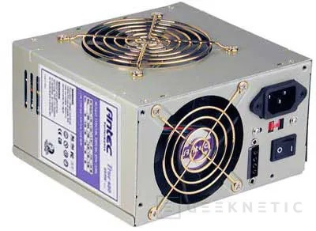

Fuente de alimentacion
►Concepto
Es un sistema que suministra electricidad a los dispositivos eléctricos. Se utiliza para transformar la energía de la red eléctrica, adaptándola a las necesidades de alimentación de un determinado dispositivo
←Volver
